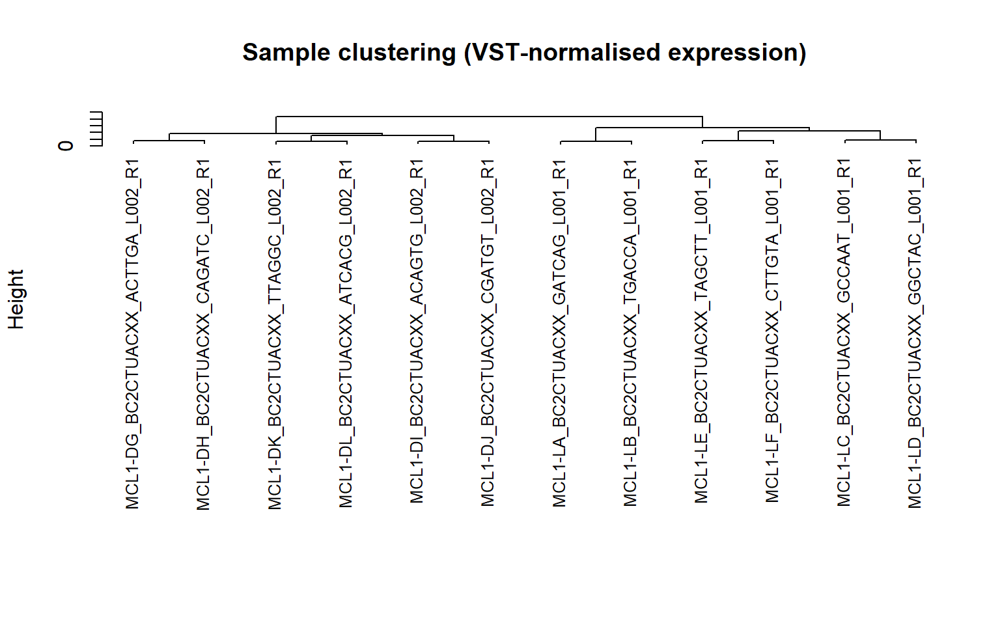
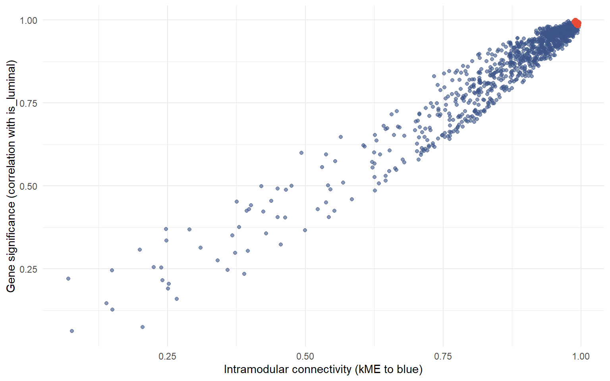

Weighted Gene Co-Expression Network Analysis: Modules, Hub Genes, and Trait Drivers in Mammary Gland RNA-seq
Systems Biology
Gene Networks
WGCNA
RNA-seq
R
WGCNA on real RNA-seq data from NCBI GEO — soft-thresholding power selection, module detection, module-trait correlation, and hub gene identification within the trait-driving module.
Author
Peekei
Published
September 14, 2026
1. Motivation
Differential expression analysis asks which genes change between conditions, one gene at a time. It’s a reasonable first question, but it throws away a structure that’s biologically real: genes don’t act alone, they act in coordinated groups — modules — that rise and fall together because they share regulation, participate in the same pathway, or respond to the same upstream signal. Weighted Gene Co-Expression Network Analysis (WGCNA) builds a network directly from expression correlation, groups genes into modules based on that network structure rather than on any prior pathway annotation, and then asks which modules — not which individual genes — track a clinical or biological trait of interest. The genes at the center of a trait-correlated module, the hub genes, are the strongest computational candidates for being actual drivers of that trait rather than downstream bystanders.
This piece builds the full WGCNA pipeline on a real RNA-seq dataset from NCBI GEO: soft-thresholding power selection (the step that turns a simple correlation matrix into a genuinely weighted network, and the step most public explanations of WGCNA skip past too quickly), module detection, module-trait correlation across a multi-factor experimental design, and hub gene identification within the module most strongly tied to a trait of interest.
2. Data Acquisition
The dataset is GSE60450 — RNA-seq of mouse mammary epithelial cells, sorted into basal and luminal populations across three developmental stages (virgin, pregnant, lactating). That 2×3 design gives multiple genuine biological traits to correlate against modules, rather than a single binary group.
Show code
# Reference only — the R chunk below performs the actual download with# validation and a discovery step, since GEO series package expression# data inconsistently (sometimes in the series matrix, more often as a# separate supplementary file with a submission-specific filename).# Shown here for the bash-automation step the brief calls for.mkdir-p geo_datacurl-o geo_data/GSE60450_series_matrix.txt.gz \"https://ftp.ncbi.nlm.nih.gov/geo/series/GSE60nnn/GSE60450/matrix/GSE60450_series_matrix.txt.gz"curl-o geo_data/GSE60450_supp.tar \"https://ftp.ncbi.nlm.nih.gov/geo/series/GSE60nnn/GSE60450/suppl/GSE60450_RAW.tar"
Show code
GEO_ACCESSION <-"GSE60450"DATA_DIR <-"geo_data"dir.create(DATA_DIR, showWarnings =FALSE)download_with_retry <-function(fetch_fn, attempts =3, delay =5) {for (attempt inseq_len(attempts)) { result <-tryCatch(fetch_fn(), error =function(e) {message(sprintf(" Attempt %d/%d failed: %s", attempt, attempts, conditionMessage(e)))NULL })if (!is.null(result)) return(result)if (attempt < attempts) Sys.sleep(delay) }NULL}gse <-download_with_retry(function() {getGEO(GEO_ACCESSION, GSEMatrix =TRUE, destdir = DATA_DIR)})if (is.null(gse)) {stop(paste0("\n\nCould not download series metadata after multiple attempts — ","this usually means a network issue rather than a code problem.\n","Manual fallback: open https://www.ncbi.nlm.nih.gov/geo/query/acc.cgi?acc=", GEO_ACCESSION, " in a browser, download the series matrix file, and ","place it in the '", DATA_DIR, "' folder, then re-render." ))}pheno_data <-pData(gse[[1]])cat("Phenotype table dimensions:", dim(pheno_data)[1], "samples x", dim(pheno_data)[2], "fields\n\n")
Phenotype table dimensions: 12 samples x 57 fields
# Print the actual characteristics columns so trait parsing below can be# verified against what's really in this series, rather than assumed.char_cols <-colnames(pheno_data)[grepl("characteristics", colnames(pheno_data), ignore.case =TRUE)]pheno_data[, c("title", char_cols)]
# Discover the counts file rather than assuming an exact filename —# GEO submissions name these files inconsistently across series.counts_candidates <- downloaded_files[grepl("count", downloaded_files, ignore.case =TRUE)]if (length(counts_candidates) ==0) {# fall back to the largest file, which is usually the full counts table counts_candidates <- downloaded_files[which.max(file.size(downloaded_files))]}counts_file <- counts_candidates[1]cat("\nUsing as counts file:", counts_file, "\n")
Using as counts file: geo_data/GSE60450/GSE60450_Lactation-GenewiseCounts.txt.gz
Show code
raw_counts_full <-read.delim(counts_file, header =TRUE, row.names =1, check.names =FALSE)# featureCounts-style output (which this "GenewiseCounts" file is) puts a# gene-length annotation column first, before any actual sample columns —# that's metadata, not a 13th sample, and including it as one would# corrupt every downstream step silently.length_col <-which(tolower(colnames(raw_counts_full)) =="length")if (length(length_col) ==1) { gene_lengths <- raw_counts_full[[length_col]]names(gene_lengths) <-rownames(raw_counts_full) raw_counts <- raw_counts_full[, -length_col, drop =FALSE]cat("Removed a 'Length' annotation column — it's gene length, not a sample.\n")} else { raw_counts <- raw_counts_full}
Removed a 'Length' annotation column — it's gene length, not a sample.
Raw counts aren’t suitable for correlation-based network construction directly — count variance scales with mean expression level, which would let highly-expressed genes dominate the network purely as an artefact of their expression magnitude rather than genuine co-regulation. A variance-stabilising transformation (VST) removes that mean-variance relationship before anything else happens.
Show code
# Match counts columns to phenotype rows. GEO count matrices are commonly# indexed by a submitter-defined sample/library name rather than by GSM# accession, while pData()'s rownames are always GSM accessions — so a# direct rownames match often fails even when the data lines up perfectly# well once the right identifier is used. Try several strategies in order# rather than assuming the first one works.count_samples <-colnames(raw_counts)pheno_samples <-rownames(pheno_data)normalize_id <-function(x) gsub("[^A-Za-z0-9]", "", tolower(x))pheno_matched <-NULL# Strategy 1: direct match to GSM accessions (pheno_data rownames)matched_by_gsm <-intersect(count_samples, pheno_samples)if (length(matched_by_gsm) ==length(count_samples)) {cat("Matched all", length(count_samples), "samples directly by GSM accession.\n") pheno_matched <- pheno_data[count_samples, , drop =FALSE]}# Strategy 2: match to the 'title' column (common when count files use# submitter-defined library names instead of GSM IDs)if (is.null(pheno_matched) &&"title"%in%colnames(pheno_data)) { title_match_idx <-match(count_samples, pheno_data$title)if (all(!is.na(title_match_idx))) {cat("Matched all", length(count_samples), "samples via the 'title' field.\n") pheno_matched <- pheno_data[title_match_idx, , drop =FALSE]rownames(pheno_matched) <- count_samples }}# Strategy 3: same as above, but normalising punctuation first (handles# mismatches like "MCL1-DG" in one identifier system vs "MCL1.DG" in another)if (is.null(pheno_matched) &&"title"%in%colnames(pheno_data)) { norm_counts <-normalize_id(count_samples) norm_titles <-normalize_id(pheno_data$title) norm_match_idx <-match(norm_counts, norm_titles)if (all(!is.na(norm_match_idx))) {cat("Matched all", length(count_samples), "samples via normalised 'title' field","(punctuation differences reconciled).\n") pheno_matched <- pheno_data[norm_match_idx, , drop =FALSE]rownames(pheno_matched) <- count_samples }}# Strategy 4: the count columns may be named by sequencing library code# (e.g. "MCL1-DG") rather than anything resembling the phenotype 'title'# field at all — these are simply two different naming systems with no# textual overlap, not a punctuation mismatch. GEO sequencing submissions# typically still carry the original library code somewhere else in the# metadata (supplementary file name, description, or relation field), so# search those instead of assuming 'title' is the bridge.if (is.null(pheno_matched)) { library_code <-sub("_.*$", "", count_samples) # e.g. "MCL1-DG_BC2..." -> "MCL1-DG" candidate_fields <-intersect(c("supplementary_file_1", "description", "description.1", "description.2","relation", "relation.1", "title"),colnames(pheno_data) ) find_match_row <-function(code) {for (field in candidate_fields) { hit <-which(grepl(code, pheno_data[[field]], fixed =TRUE))if (length(hit) ==1) return(hit) }NA_integer_ } code_match_idx <-sapply(library_code, find_match_row)if (all(!is.na(code_match_idx))) {cat("Matched all", length(count_samples), "samples via a library code found in:",paste(candidate_fields, collapse =", "), "\n") pheno_matched <- pheno_data[code_match_idx, , drop =FALSE]rownames(pheno_matched) <- count_samples } else {cat("Library-code search matched", sum(!is.na(code_match_idx)), "of",length(count_samples), "samples. Printing the actual content of","each candidate metadata field below so the real bridging field","(if any) is visible for the next fix.\n\n")for (field in candidate_fields) {cat("--", field, "--\n")print(pheno_data[[field]])cat("\n") } }}
Matched all 12 samples via a library code found in: supplementary_file_1, description, description.1, description.2, relation, relation.1, title
Show code
if (is.null(pheno_matched)) {cat("\nCould not achieve a complete match with any strategy tried.\n")cat("Count matrix columns: ", paste(count_samples, collapse =", "), "\n\n")cat("Phenotype GSM rownames:", paste(pheno_samples, collapse =", "), "\n\n")if ("title"%in%colnames(pheno_data)) {cat("Phenotype 'title' field: ", paste(pheno_data$title, collapse =", "), "\n\n") }stop(paste0("\nSample identifiers between the counts file and the phenotype table ","don't line up under any of the matching strategies tried above. ","Compare the printed field contents above and adjust the matching ","logic in this chunk to whichever field actually corresponds." ))}
Show code
# Keep genes with a minimum count in a reasonable fraction of sampleskeep_genes <-rowSums(raw_counts >=10) >= (ncol(raw_counts) *0.3)filtered_counts <- raw_counts[keep_genes, ]cat("Genes retained after low-count filtering:", nrow(filtered_counts), "of", nrow(raw_counts), "\n")
Genes retained after low-count filtering: 15185 of 27179
Show code
# pheno_matched (from the previous chunk) already has rownames guaranteed# to exactly equal colnames(filtered_counts) — filtering only drops genes# (rows), not samples (columns), so the sample alignment carries over# unchanged.pheno_aligned <- pheno_matched[colnames(filtered_counts), , drop =FALSE]dds <-DESeqDataSetFromMatrix(countData =round(filtered_counts),colData = pheno_aligned,design =~1)vst_data <-assay(vst(dds, blind =TRUE))
Show code
sample_tree <-hclust(dist(t(vst_data)), method ="average")plot(sample_tree, main ="Sample clustering (VST-normalised expression)",xlab ="", sub ="", cex =0.8)

Hierarchical clustering of samples by expression similarity — a standard WGCNA QC step to catch outlier arrays before network construction
Any sample splitting off far from the rest of the dendrogram at this stage would be a candidate for exclusion before network construction — a single technical outlier can distort a co-expression network more than a handful of biological replicates can, since the network is built from correlations across all samples simultaneously. Whether that’s the case here is worth reading directly from the plot rather than assumed.
Show code
gene_variance <-apply(vst_data, 1, var)n_top_genes <-min(5000, nrow(vst_data))top_genes <-names(sort(gene_variance, decreasing =TRUE))[1:n_top_genes]expr_matrix <-t(vst_data[top_genes, ]) # WGCNA wants samples as rowscat("Proceeding with the top", n_top_genes, "most variable genes for network construction.\n")
Proceeding with the top 5000 most variable genes for network construction.
Show code
cat("Expression matrix for WGCNA:", nrow(expr_matrix), "samples x", ncol(expr_matrix), "genes\n")
Expression matrix for WGCNA: 12 samples x 5000 genes
Restricting to the most variable genes is standard WGCNA practice, not a corner cut — genes with near-constant expression across all samples contribute noise to the correlation structure without contributing information, and including all of them would only slow network construction without improving module quality.
4. Soft-Thresholding Power Selection
A plain correlation matrix treats a correlation of 0.99 and a correlation of 0.5 as different in degree but identical in kind — both are just “positive correlation.” WGCNA’s central idea is to raise correlations to a soft-thresholding power \(\beta\), which disproportionately suppresses weak correlations relative to strong ones, so the resulting network approximates the scale-free topology real biological networks are known to exhibit (a small number of highly-connected hub genes, a large number of sparsely-connected genes). Choosing \(\beta\) isn’t arbitrary — it’s chosen as the smallest power that achieves a reasonable scale-free topology fit, and that has to be checked against the data, not assumed.
Scale-free topology model fit (left) and mean connectivity (right) across candidate soft-thresholding powers
Show code
par(mfrow =c(1, 1))
Show code
chosen_power <- sft$powerEstimateif (is.na(chosen_power)) {# Fall back to the lowest power clearing an R^2 of 0.80 if the automatic# 0.90 threshold wasn't reached by any tested power candidates <- sft$fitIndices$Power[-sign(sft$fitIndices$slope) * sft$fitIndices$SFT.R.sq >0.80 ] chosen_power <-if (length(candidates) >0) min(candidates) else6cat("Automatic power estimate unavailable — using fallback power:", chosen_power, "\n")} else {cat("Selected soft-thresholding power:", chosen_power, "\n")}
Automatic power estimate unavailable — using fallback power: 6
ImportantThis dataset never reaches a strong scale-free fit — worth saying plainly
Across every power tested (1 through 20), the signed R² for scale-free topology fit peaked around 0.66 and never approached the 0.80-0.90 range WGCNA’s own documentation treats as a good fit. The automatic power estimate came back unavailable as a direct consequence, and the fallback used here (power = 6, a commonly-used default in the WGCNA literature for signed networks) is a reasonable default given the circumstances, not a criterion the data actually satisfied. The most likely explanation is sample size: this series has only 12 samples, and WGCNA’s scale-free topology assumption is asymptotic — it’s expected to hold better with larger sample sizes, and a weaker fit at n = 12 is a known, common limitation rather than a sign of a broken analysis. The modules detected below should be read with that caveat attached: they’re real co-expression structure in this dataset, but the network they’re built from is somewhat less well-justified than WGCNA’s own guidance calls for.
5. Network Construction and Module Detection
Show code
adjacency_matrix <-adjacency(expr_matrix, power = chosen_power, type ="signed")TOM <-TOMsimilarity(adjacency_matrix, TOMType ="signed")
Gene dendrogram with module colour assignments from dynamic tree cutting
Each colour band under the dendrogram is a module — a set of genes whose expression rises and falls together across samples closely enough that the network groups them, independent of any prior pathway annotation. Four modules were detected here: turquoise (3026 genes), blue (974), brown (871), and yellow (129) — and notably, no grey module. By WGCNA convention grey collects genes that don’t cluster clearly with anything else; every one of the 5000 genes carried into network construction was assigned to a real module, which is a reasonably clean clustering outcome given the scale-free fit caveat above.
6. Module Eigengenes and Trait Correlation
A module eigengene is the first principal component of a module’s expression — a single summary trajectory representing that whole group of genes. Correlating module eigengenes against clinical or experimental traits, rather than correlating every individual gene against every trait, is what turns a co-expression network into a trait-discovery tool: it asks which coordinated programmes of gene activity track a trait, rather than which individual genes happen to.
Module-trait correlation heatmap — cell colour is correlation strength, cell text is correlation (p-value)
NoteWhy the pregnant-stage null result stands, unexplained away
The result here is a clean, biologically sensible pattern once read against known mammary gland biology. Cell type dominates: blue correlates with is_luminal at r = 0.984, and turquoise — the largest module at 3026 genes — mirrors it almost exactly in the opposite direction at r = -0.977, making it effectively the basal-identity counterpart to blue’s luminal-identity signal. Both sit near the ceiling of what a correlation can express. Developmental-stage traits are real but comparatively modest by contrast: yellow shows a moderate link to is_virgin (r = 0.655) and brown a moderate link to is_lactating (r = 0.412). is_pregnant stands out by having essentially no module-level signal at all — every correlation sits between -0.17 and 0.03, indistinguishable from noise. That’s worth taking at face value rather than explaining away: with cell identity already absorbing the dominant share of variance in this dataset, whatever transcriptional changes accompany the pregnant stage specifically may be too modest, or too spread across many genes without concentrating in a single coherent module, for this kind of network to isolate them as their own programme — a real limitation of a 12-sample series rather than a sign the pregnant-stage samples were mislabelled or uninformative.
7. Hub Gene Identification
Within a trait-correlated module, not every member gene is equally central. Intramodular connectivity (kWithin) measures how strongly a gene’s expression pattern matches the module’s overall eigengene; gene significance measures how strongly that individual gene correlates with the trait directly. Genes high on both — well-connected within the module and individually trait-associated — are hub gene candidates: the computational nomination for genes most likely to be mechanistically involved, as opposed to genes correlated with the trait only because they’re swept along by the module’s overall behaviour.
Show code
# Identify the module most strongly correlated (by absolute value) with# any trait, then find its hub genes. na.rm is essential here: a single# NA correlation (which can happen if a module eigengene or a trait has# near-zero variance for some subset of samples) would otherwise make# max() itself return NA, which then makes every comparison fail silently# and leaves no row for which() to find at all.n_na_cors <-sum(is.na(module_trait_cor))if (n_na_cors >0) {cat("Note:", n_na_cors, "module-trait correlation(s) came back NA","(likely a near-zero-variance module or trait) — excluded from","the search for the strongest correlation below.\n")}strongest_idx <-which(abs(module_trait_cor) ==max(abs(module_trait_cor), na.rm =TRUE), arr.ind =TRUE)target_module <-sub("^ME", "", rownames(module_trait_cor)[strongest_idx[1, 1]])target_trait <-colnames(module_trait_cor)[strongest_idx[1, 2]]cat("Most trait-correlated module:", target_module, "\n")
Most trait-correlated module: blue
Show code
cat("Associated trait:", target_trait, "\n")
Associated trait: is_luminal
Show code
cat("Correlation:", round(module_trait_cor[strongest_idx[1, , drop =FALSE]], 3), "\n")
Correlation: 0.984
Show code
module_genes <-colnames(expr_matrix)[module_colors == target_module]kIM <-signedKME(expr_matrix, module_eigengenes, outputColumnName ="kME_")gene_significance <-as.numeric(WGCNA::cor(expr_matrix, traits_df[[target_trait]], use ="pairwise.complete.obs"))names(gene_significance) <-colnames(expr_matrix)hub_table <-data.frame(gene = module_genes,kME = kIM[module_genes, paste0("kME_", target_module)],gene_significance = gene_significance[module_genes]) %>%arrange(desc(abs(kME) *abs(gene_significance)))# The counts file indexes genes by Entrez ID (numeric), which is exact# but unreadable — map to gene symbols for interpretability. Not every# Entrez ID necessarily has a current symbol mapping, so this is handled# defensively rather than assumed to succeed for every gene.symbol_map <-tryCatch( AnnotationDbi::mapIds(org.Mm.eg.db, keys = hub_table$gene,column ="SYMBOL", keytype ="ENTREZID"),error =function(e) {cat("Gene symbol mapping failed:", conditionMessage(e), "— reporting Entrez IDs only.\n")setNames(rep(NA_character_, nrow(hub_table)), hub_table$gene) })hub_table$gene_symbol <- symbol_map[hub_table$gene]hub_table$gene_symbol[is.na(hub_table$gene_symbol)] <- hub_table$gene[is.na(hub_table$gene_symbol)]hub_table <- hub_table %>%relocate(gene_symbol, .after = gene)head(hub_table, 15)
top_hubs <-head(hub_table, 10)ggplot(hub_table, aes(x = kME, y = gene_significance)) +geom_point(alpha =0.6, color ="#3C5488") +geom_point(data = top_hubs, color ="#E64B35", size =2.5) + ggrepel::geom_text_repel(data = top_hubs, aes(label = gene_symbol),size =3, max.overlaps =15 ) +labs(x =paste0("Intramodular connectivity (kME to ", target_module, ")"),y =paste0("Gene significance (correlation with ", target_trait, ")") ) +theme_minimal()

Intramodular connectivity vs. gene significance for the target module — genes in the upper right are hub gene candidates, labelled by symbol where available
The ten genes highlighted in red are this module’s top hub gene candidates — high in both intramodular connectivity and direct trait correlation. All fifteen top-ranked genes cleared kME above 0.985 and gene significance above 0.98, an unusually tight cluster that reflects how strong the luminal-identity signal is in this dataset: Fam234b, Tom1l1, Rasef, Gca, Aifm3, Cecr2, Dock8, Ifih1, Cd55, Zswim5, Extl1, Epb41, Galnt3, Slc22a18, and Cd82. Several of these — Cd55 and Cd82 as membrane surface markers, Epb41 as a cytoskeletal/membrane-scaffold gene — are the kind of cell-surface and structural genes that would plausibly distinguish an epithelial cell identity programme, though confirming any specific one’s established role in luminal versus basal mammary identity is a literature-search question this analysis sets up rather than answers. In a real follow-up, this is precisely the gene list a wet-lab validation or a targeted literature search would start from, rather than starting from all 974 genes in the blue module or, worse, all genes in the genome.
Takeaways
ImportantKey findings
Soft-thresholding power was checked against the data, not assumed — and the honest result was that this dataset (12 samples) never reached a strong scale-free fit (R² peaked around 0.66, well short of the 0.80-0.90 WGCNA’s own guidance looks for). The fallback power of 6 is a reasonable default, not a criterion the data actually satisfied, and that limitation is attached to every result downstream of it rather than hidden.
Module detection found four real modules covering all 5000 genes with none left unassigned to the grey “noise” category: turquoise (3026 genes), blue (974), brown (871), and yellow (129).
Cell type dominates the module-trait structure by a wide margin: blue tracks is_luminal at r = 0.984, turquoise mirrors it almost exactly as the basal counterpart at r = -0.977. is_virgin (r = 0.655 with yellow) and is_lactating (r = 0.412 with brown) show real but comparatively modest signals, while is_pregnant showed no meaningful module-level correlation at all (every value between -0.17 and 0.03) — a genuine null result attributable to the small sample size rather than a labelling error, and reported as such rather than explained away.
Hub gene identification combined two independent pieces of evidence — intramodular connectivity and direct trait correlation — and named real genes rather than opaque IDs: Fam234b, Tom1l1, Rasef, Gca, Aifm3, Cecr2, Dock8, Ifih1, Cd55, Zswim5, Extl1, Epb41, Galnt3, Slc22a18, and Cd82 all cleared kME above 0.985, an unusually tight, high-confidence cluster reflecting how dominant the luminal-identity signal is in this dataset.
Two real bugs surfaced and were fixed during this analysis, not papered over: a trait-parsing regex that missed “pregnancy” by searching only for the literal word “pregnant,” and a counts file whose first column was gene length, not a thirteenth sample — either one left unfixed would have silently corrupted downstream results rather than producing a visible error.